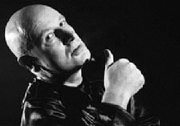

Et af indslagene til festivalen var filmen om Knud Vesterskov:
From Scratz
 Knud Vesterskov |
I sin lange karriere har han aldrig været til fals for det lette, men derimod søgt det foruroligende, poetiske og grænseoverskridende.
Portrættet er bygget op omkring musik, billeder og scener fra nogle af hans utallige film, og byder samtidigt på interviews med nogle af de mange filmfolk og musikere Vesterskov har arbejdet sammen med.
Filmens instruktør, Bent Staalhøj, formår med dette portræt at afdække mennesket og myten Knud Vesterskov.
Instruktør: Bent Staalhøj
Medvirkende: Knud Vesterskov, Peter Aalbæk Jensen, Mogens Rukov, Lulu, Peter Peter m.fl.
Danmark, 2002,
75 min., DigiBeta
dansk uden undertekster
Før filmen lavede Dennis Agerblad en pornografisk performace foran lærredet. Og Johnny Warehouse sang en sang om sin røv imens Puta var gogo danser.
Efter filmen i filmhuset til kl. 05 om morgenen, var der fødselsdags fest for Knud Vesterskov som fylte 60år.
dunst gik amok.